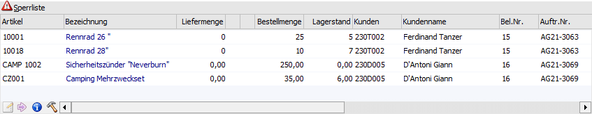
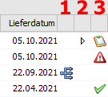
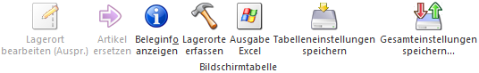

In der Tabelle "Sperrliste" des Programms "Kundenbestellungen bearbeiten" werden nach Anwahl des Buttons "Anzeigen" alle für den gewählten Zeitraum (inklusive der weiteren Selektionen) fälligen Lieferungen, welche nicht ausgeliefert werden können, angezeigt.
Hinweis
Über die Spalte "Liefermenge" (in der Sperrliste immer mit "0" vorbelegt) können Liefermengen, wie in der Tabelle "Kundenbestellungen", vorgegeben werden. Dabei ist allerdings die Spalte "Begründung" zu beachten, da beim anschließenden Druck des Lieferscheins die Artikelzeile erneut geprüft wird und der Lieferscheindruck somit unterbunden werden könnte.
Achtung
Wenn lt. Beleg bzw. Artikelzeile eine Teilliefersperre aktiviert wurde (auf Beleg- oder Zeilenebene) und diese greift, werden im Standard die entsprechenden Artikelzeilen nicht in der Tabelle "Speerliste", sondern nur in der gedruckten Sperrliste aufgeführt! Dieses betrifft auch Artikel, welche mit dem Freigabestatus "ist gesperrt" versehen sind.

In der Tabelle "Sperrliste" stehen folgende Spalten zur Verfügung:
Ø Artikel
In dieser Spalte wird die Artikelnummer des Artikels angezeigt.
Ø Bezeichnung
In diesem Feld wird die Artikelbezeichnung aus dem Kundenauftrag dargestellt.
Ø Liefermenge
An dieser Stelle wird die auszuliefernde Menge mit "0" vorgeschlagen und kann ggfs. editiert werden.
Hinweis
Bevor eine Liefermenge erfasst wird, muss / sollte der Sperrgrund (siehe Spalte "Begründung") geprüft und beseitigt werden.
Ø Menge 2
Handelt es sich um einen Artikel, der in 2 Mengen geführt wird, wird an dieser Stelle die Menge 2 dargestellt und kann ggfs. editiert werden.
Ø Lagerort
In der Spalte "Lagerort" wird über den Status der Lagerorterfassung Auskunft gegeben:
ü  - Rot
- Rot
Die auszuliefernde Menge wurde
bisher nicht auf Lagerorte aufgeteilt.
ü  - Orange
- Orange
Ein Teil der auszuliefernden
Menge wurde nicht auf Lagerorte aufgeteilt.
ü  - Grün
- Grün
Die auszuliefernde Menge wurde auf
Lagerorte aufgeteilt.
ü  - Dunkelgrün
- Dunkelgrün
Es wurde auf einen Lagerort
mehr aufgeteilt, wie angeliefert wird. Wenn die Aufteilung in solch einem Fall
über mehrere Orte stattgefunden hat, dann wird eine orange Kugel angezeigt.
Hinweis
Per Doppelklick auf das Kugel-Symbol kann das Fenster "Lagerorte erfassen" geöffnet werden.
Ø Bestellmenge
An dieser Stelle wird die noch zu liefernde Bestellmenge angezeigt.
Ø Lagerstand
In der Spalte "Lagerstand" wird der aktuelle Lagerstand des Artikels angezeigt. Für eine bessere Übersicht wird die Menge direkt, jeweils um die Liefermenge, reduziert.
Hinweis
Bei einer Änderung der Liefermenge wird der Lagerstand nicht neu berechnet.
Ø Kunde / Kundenname / Bel.Nr. / Auftr. Nr.
In diesen Spalten werden die Kundennummer, der Kundenname, die Laufnummer des Belegs und die Auftragsnummer angezeigt.
Ø Begründung
In der Spalte "Begründung" wird der Sperrgrund ausgewiesen. Folgende Gründe können vorliegen:
ü Mindestliefermenge wurde nicht
erreicht
Es wurde der Mindestauslieferungs-Prozentsatz lt. FAKT-Parametern
(WinLine Start - Parameter - FAKT-Parameter - Belege - Kundenbestellungen -
Einstellung "Mindestauslieferung") nicht erreicht.
Beispiel
Die Auftragsmenge beträgt 100 Stück und in den FAKT-Parametern wurde als Mindestauslieferung 50 % hinterlegt. Sollte der Lagerstand des Artikels nur 48 Stück betragen, wird keine Auslieferung durchgeführt, da für die Lieferung mindestens 50 Stück erforderlich sind.
ü nicht genügend auf Lager
Bei
dem Artikel ist kein Lagerstand vorhanden.
Hinweis
Die Prüfung kann mit Hilfe der Option "Lagerstand nicht überprüfen" ausgeschaltet werden (nähere Informationen entnehmen Sie bitte dem Kapitel Kundenbestellungen bearbeiten - Optionen).
ü nicht genügend auf Lager (Erster
Problemartikel: 50001 - Bikini "Teeny-Weeny")
Für die Zusammenstellung
(Auslieferung) einer Handelsstückliste ist nicht genügend Lagerstand vorhanden,
wobei der erste Problemartikel in Klammern aufgeführt wird. Grundvoraussetzung
hierfür ist die Aktivierung der Option "Lagerstand der Komponenten prüfen"
(nähere Informationen entnehmen Sie bitte dem Kapitel Kundenbestellungen bearbeiten -
Optionen).
ü Kunde gesperrt
Der Kunde hat
das hinterlegte Sperr-Kreditlimit (Stammdaten - Konten - Personenkonten -
Register "FIBU" - Einstellung "Kreditlimit") überschritten.
ü Liefermenge ist nicht
reserviert
Für diese Artikelzeile sind keine entsprechenden
Lager-Reservierungszeilen vorhanden, obwohl der Artikel reservierungspflichtig
ist.
Achtung
Eine Reservierung von einer offenen Bestellung oder von einem noch zu produzierenden Produktionsauftrag ist nicht ausreichend, da dieses bei Lieferscheindruck zu einer negativen Lager-Reservierung führen würde.
Hinweis
Beim Editieren der Menge wird das Fenster "Kundenbestellungen - Artikelreservierungen bearbeiten" geöffnet, in dem die Reservierungen bearbeitet werden können (nähere Information hierzu finden Sie im Kapitel Kundenbestellungen - Artikelreservierung bearbeiten).
ü Liefersperre bis xx-xx-xxxx lt.
Artikelstamm / Liefersperre (ohne Ende) lt. Artikelstamm
Es ist im
Artikelstamm für diesen Artikel eine Liefersperre (Stammdaten - Artikelstamm -
Artikel - Register "Lager" - Unterregister "Einstellungen" - Option
"Liefersperre)" hinterlegt worden.
Hinweis
Per rechter Maustaste (Option "Liefersperre aufheben (xxxx)") kann die Liefersperre aufgehoben werden.
ü Teillieferung bei Kunde xxx /
Laufnummer yyy nicht erlaubt
Es besteht lt. Kundenauftrag eine
Teilliefersperre auf Zeilen- oder Belegebene und es ist nicht genügend
Lagermenge vom Artikel (Teilliefersperre auf Zeilenebene) oder irgendeinem
Artikel des Kundenauftrags (Teilliefersperre auf Belegebene) vorhanden.
Hinweis
Solche Zeilen werden in der Tabelle nur dargestellt, wenn in dem Optionsbereich (Button "Optionen") die Option "Zeilen mit Teilliefersperre auf Belegebene editieren" aktiviert wurde.
Ø Preis
In dieser Spalte wird der Einzelpreis aus dem Kundenauftrag angezeigt.
Ø FW
Handelt es sich bei dem Kundenauftrag um einen Beleg, welcher in Fremdwährung geführt wird, wird die Fremdwährung in dieser Spalte angezeigt.
Ø Liefertage
In der Spalte "Liefertage" werden die originalen Liefertage aus dem Kundenauftrag, d.h. in wieviel Tagen war die Lieferung fällig, dargestellt.
Ø Lieferdatum
An dieser Stelle wird das Lieferdatum gemäß Kundenauftrag angezeigt.
Ø standardmäßige Spalte nach "Lieferdatum"

ü 1- Hauptartikel mit
Ausprägung
Handelt es sich bei dem Artikel um einen Hauptartikel mit
Ausprägung, bei dem noch keine Aufteilung auf die einzelnen Ausprägungen erfolgt
ist, so wird in dieser Spalte das Icon  angezeigt (nähere Informationen siehe
Feld "standardmäßige Spalten nach "Lieferdatum"").
angezeigt (nähere Informationen siehe
Feld "standardmäßige Spalten nach "Lieferdatum"").
ü 2 - Komponenten
Handel es sich
bei dem Artikel um eine zu produzierende Stückliste, so können über diese Spalte
die Komponenten ein- und ausgeblendet werden. Grundvoraussetzung hierfür ist die
Aktivierung der Option "Lagerstand der Komponenten prüfen" (nähere Informationen
entnehmen Sie bitte dem Kapitel Kundenbestellungen bearbeiten -
Optionen).
ü 3 - Liefersperre /
Handelsstückliste
Es wird mittels eines Symbols angezeigt, ob es sich um
einen Artikel mit Liefersperre (gültig bzw. aufgehoben) oder um eine zu
produzierende Handelsstückliste handelt.
ü - Gültige Liefersperre
Es handelt es
sich um einen Artikel mit einer gültigen Liefersperre (nähere Informationen
siehe Spalte "Begründung" - Sperrgrund "Liefersperre bis xx-xx-xxxx lt.
Artikelstamm / Liefersperre (ohne Ende) lt. Artikelstamm").
Hinweis
Per rechter Maustaste (Option "Liefersperre aufheben (xxxx)") kann die Liefersperre aufgehoben bzw. wieder aktiviert werden.
ü  - Aufgehobene Liefersperre
- Aufgehobene Liefersperre
Es handelt es
sich um einen Artikel mit einer aufgehobenen Liefersperre (nähere Informationen
siehe Spalte "Begründung" - Sperrgrund "Liefersperre bis xx-xx-xxxx lt.
Artikelstamm / Liefersperre (ohne Ende) lt. Artikelstamm").
Hinweis
Per rechter Maustaste (Option "Liefersperre setzen (xxxx)") kann die Liefersperre wieder aktiviert werden.
ü  - Handelsstückliste
- Handelsstückliste
Sollte es sich bei
dem Artikel um eine Handelsstückliste handeln, welche "produziert" werden muss
(also nicht vom Lager entnommen werden soll), so wird dieses Icon angezeigt.
Ø bestätigtes Lieferdatum (Bezeichnungen lt. Einstellung in den Belegoptionen)
An dieser Stelle wird das bestätigte Lieferdatum (auch "Lieferdatum 2" genannt) gemäß Kundenauftrag angezeigt.
Tabellenbuttons

Ø Lagerorte bearbeiten (Auspr.)
Dieser Button kann nur dann angewählt werden, wenn in der Sperrliste ein Hauptartikel mit Ausprägung vorhanden ist, dessen Ausprägung als "Lagerort" definiert ist. Wenn dieses der Fall ist, gibt es 3 mögliche Varianten:
ü  Lagerort bearbeiten
Lagerort bearbeiten
Es wird der
Menüpunkt "Lagerorte bearbeiten (Auspr.)" aufgerufen, wodurch alle Artikel mit
dem im Artikel hinterlegten Lagerort (Ausprägung, die als Lagerort
gekennzeichnet ist) vorgeschlagen werden.
ü Auftrag bearbeiten
Es wird der Menüpunkt
"Lagerorte bearbeiten (Auspr.)" aufgerufen, wodurch alle Artikel mit dem im
Artikel hinterlegten Lagerort (Ausprägung, die als Lagerort gekennzeichnet ist)
und des entsprechenden Auftrags vorgeschlagen werden.
ü  Artikel bearbeiten
Artikel bearbeiten
Es wird der Menüpunkt
"Lagerorte bearbeiten (Auspr.)" aufgerufen, wobei nur der Artikel mit dem im
Artikel hinterlegten Lagerort (Ausprägung, die als Lagerort gekennzeichnet ist)
vorgeschlagen wird.
Ø Artikel ersetzen
Durch die Anwahl des Buttons öffnet sich das Fenster "Ersatzartikelnummer - Auswahl", aus dem ein Ersatzartikel gewählt werden kann. Hierdurch wird der aktuelle Artikel aus der Sperrliste ersetzt und die Zeile in grün dargestellt. Die endgültige Speicherung des gewählten Ersatzartikels erfolgt durch die Anwahl des Buttons "Ok" bzw. der Taste F5 im Fenster "Kundenbestellungen bearbeiten".
Achtung
Dieser Button ist nur dann aktiv, wenn beim Artikel eine Ersatzartikelnummer hinterlegt wurde. Außerdem können Ersatzartikel nur in der Sperrtabelle vergeben werden.
Ø Beleginfo anzeigen
Durch die Anwahl des "Info"-Buttons kann, ausgehend von der gerade selektieren Zeile, der dahinterliegende Beleg angesehen werden.
Ø Lagerorte erfassen
Durch Anwahl des Buttons "Lagerorte erfassen" wird das Fenster "Lagerorte erfassen" geöffnet.
Achtung
Die Speicherung der Lagerorterfassung findet temporär statt, d. h. bei einem erneuten Aufruf von "Kundenbestellungen bearbeiten" (mit den gleichen Auftragszeilen) werden die zuvor getätigten Lagerortzuweisungen verworfen. Aus diesem Grund ist eine Lagerorterfassung für Sperrzeilen, welche nicht ausgeliefert werden, nicht ratsam.
Ø Ausgabe Excel
Durch Anwahl des Buttons "Ausgabe Excel" wird der Inhalt der Tabelle an Microsoft Excel übergeben.
Ø Tabelleneinstellungen speichern
Die Spalten einer Tabelle können grundsätzlich an beliebige Positionen verschoben, bzw. in der Breite entsprechend angepasst werden. Durch Anwahl des Buttons "Tabelleneinstellungen speichern" werden die Einstellungen benutzerspezifisch gespeichert und bei dem nächsten Aufruf des Programmpunktes wieder vorgeschlagen.
Ø Gesamteinstellungen speichern
Im Gegensatz zu "Tabelleneinstellungen speichern" können mit "Gesamteinstellungen speichern" mehrere Tabellenaufbauten gespeichert und nach Wunsch geladen werden. Zusätzlich werden Sonderfunktionen der Tabelle (z.B. "Spalte gruppieren") ebenfalls bei der Speicherung bedacht.